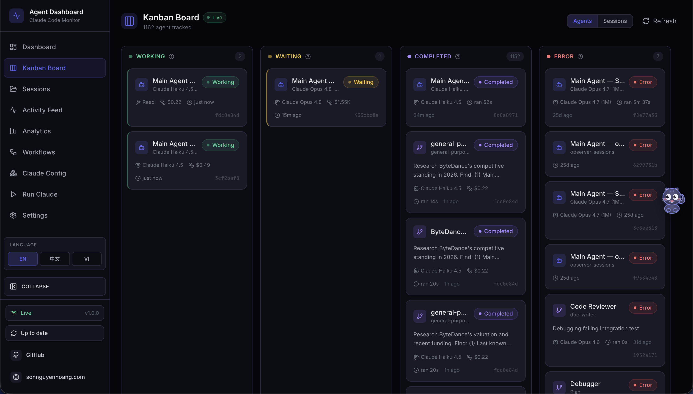
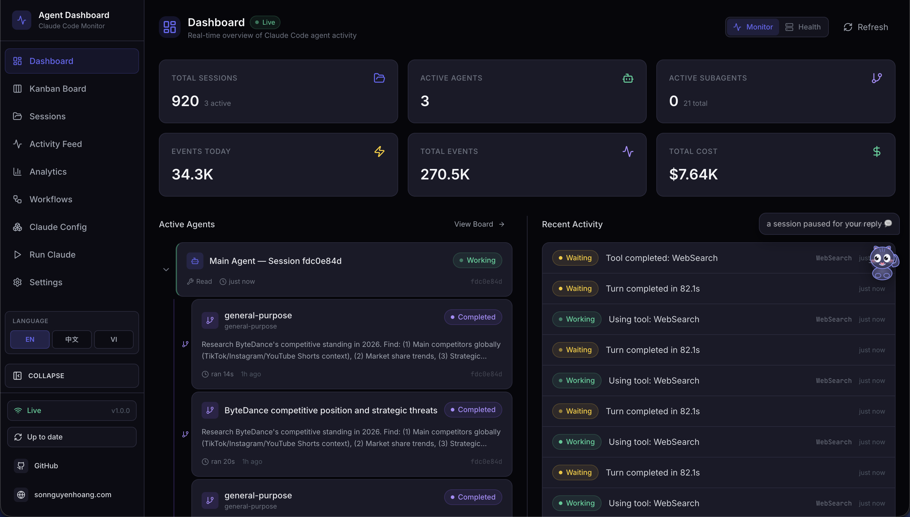

自制技术文档模板，样式与内容分离。
多智能体协作框架，状态机驱动。
Claude Code 会话实时可视化。
实践过程中的开放问题。
LaTeX Workshop 以「工具(tool) + 配方(recipe)」组合定义编译链；模板自带 .vscode/settings.json 与 .latexmkrc。
// .vscode/settings.json "latex-workshop.latex.tools": [{ "name": "xelatex", "command": "xelatex", "args": ["-synctex=1", "-interaction=nonstopmode", "-file-line-error", "%DOCFILE%"] }] "latex-workshop.latex.recipes": [{ "name": "xelatex", "tools": ["xelatex"] }] # .latexmkrc（一键编译） $pdf_mode = 1; # xelatex → pdf $pdflatex = 'xelatex -synctex=1 ...';
不依赖任何模板的最小可编译示例，使用 ctexart 文档类。
\documentclass{ctexart} \title{文档标题} \author{作者} \date{\today} \begin{document} \maketitle \tableofcontents \section{概述} 这是一份最小可编译的 LaTeX 文档。 \subsection{公式示例} 行内公式 $E = mc^2$，独立公式： \begin{equation} \int_a^b f(x)\,dx = F(b) - F(a) \end{equation} \end{document}
利于 PDF 转 Word 后保持可读。
优先 table / figure / caption。
见表 \ref，不依赖"如下"。
团队统一风格零成本。
PRE = Plan / Review / Execute，三角色分工。
也是 preparation（准备）——为项目起飞提供必要材料。
为现有项目叠加的协作框架：一支分工明确、具备沟通渠道的智能体团队。
强推理模型。读目标与代码，拆解需求、制定方案。
快速编码模型。按方案编码实现。
细致审核模型。审需求与产出，驳回冗余。
- [ ] 用户登录功能 - [ ] 用户注册功能
## [时间] 角色 — 动作 状态：PLN_ING
# 角色：规划者 可声明 PLN_ING · REV_WAIT
# 角色：执行者 可声明 EXE_ING · REV_WAIT
# 角色：审核者 REV_ING · EXE_WAIT · DONE
同一需求连续驳回 3 次触发阻断，回退 PLN_WAIT，由规划者重新拆分。
审核通过产出后直接 git commit，格式 V{日期}-{时间} V{语义版本}。
改项目目标文档，规划者下轮自动识别：
三角色各开一终端，以 /loop 3m 每 3 分钟轮询协作日志；每轮先读日志，状态匹配则行动。
/loop 3m "读 {项目路径}/.pre/{项目名}/规划者指导.md
并作为规划者执行。
每轮先读协作日志确认最新状态。"
规划者用强推理模型，执行者用快速编码模型，审核者用细致审核模型——依职责而非绝对能力。
保证智能体始终可在磁盘读取协作文档；需版本管理可手动取消忽略并提交基线。
不覆盖已有文件、日志 append-only、项目目标文档受保护（智能体只读不改）。
统计 · 活跃卡片 · 活动流
按状态分列 · 暴露阻塞
费用 · 模型 · 时长 · 分页
Agent / Conversation / Timeline
实时事件 · 多维过滤
Token · 工具 · 热力图
编排 DAG · 协作网络
评分 · 缓存 · 错误率（5s 刷新）
en / zh / vi · 浏览器通知


经验散落于对话记录、本地笔记与个人记忆，缺乏结构化的保存与复用机制；AI 每次介入若缺少背景上下文，需从零理解，沟通成本重复发生。
知识的可复用性决定 AI 协作的边际成本。缺乏沉淀机制时，每次协作都需重新沟通背景，积累无法形成复利；结构化的知识资产可被 AI 持续调用，使个人能力随时间累加而非归零。
skill 的调用依赖模型对其 description 的理解与匹配；关键词枚举与自然表达覆盖两种写法直接影响触发率，描述不当则触发不稳——该触发时未触发，或触发后未按指令执行。
skill 是将工作流固化为可复用资产的关键机制。调用不稳定则资产无法被可靠复用——相当于具备工具却无法在需要时启用，其价值难以兑现。
多个智能体共享同一工作空间（文件系统、代码库），无协调机制则产生竞态、重复劳动与互相覆盖；单一智能体在缺乏制衡时也易沿偏差方向持续推进。
多智能体是放大 AI 产能的方向，但协调复杂度常抵消并行收益。缺乏可靠的各司其职机制时，管理难度反高于单智能体，并行可能引入额外冲突成本而非提效。
当下投入大量精力搭建的工具与技巧，可能随模型升级而失去价值；若不分主次深入所有环节，精力会消耗在可被替代的部分，而稳定的工程方法论反而投入不足。
时间与精力有限，投入方向决定长期收益。识别方法论中"不变"的部分与技巧中"可被替代"的部分，是将精力配置于复利点的前提，决定能否在 AI 能力快速演进中持续有效产出。